library(tidyverse)6 One-sample inference
6.1 Hunter-gatherers in Australia
A hunter-gatherer society is one where people get their food by hunting, fishing or foraging rather than by agriculture or by raising animals. Such societies tend to move from place to place. Anthropologists have studied hunter-gatherer societies in forest ecosystems across the world. The average population density of these societies is 7.38 people per 100 km\(^2\). Hunter-gatherer societies on different continents might have different population densities, possibly because of large-scale ecological constraints (such as resource availability), or because of other factors, possibly social and/or historic, determining population density.
Some hunter-gatherer societies in Australia were studied, and the population density per 100 km\(^2\) recorded for each. The data are in http://ritsokiguess.site/datafiles/hg.txt.
Read the data into R. Do you have the correct variables? How many hunter-gatherer societies in Australia were studied? Explain briefly.
The question of interest is whether these Australian hunter-gatherer societies are like the rest of the world in terms of mean population density. State suitable null and alternative hypotheses. Define any symbols you use: that is, if you use a symbol, you also have to say what it means.
Test your hypotheses using a suitable test. What do you conclude, in the context of the data?
Do you have any doubts about the validity of your test? Explain briefly, using a suitable graph to support your explanation.
6.2 Buses to Boulder
A bus line operates a route from Denver to Boulder (these places are in Colorado). The schedule says that the journey time should be 60 minutes. 11 randomly chosen journey times were recorded, and these are in the file link, with journey times shown in minutes.
Read the data into R, and display the data frame that you read in.
Run a suitable test to see whether there is evidence that the mean journey time differs from 60 minutes. What do you conclude? (I want a conclusion that says something about journey times of buses.)
Give a 95% confidence interval for the mean journey time. (No R code is needed here.)
Do you draw consistent conclusions from your test and confidence interval? Explain briefly.
Draw a boxplot of the journey times. Do you see a reason to doubt the test that you did above?
6.3 Length of gestation in North Carolina
The data in file link are about 500 randomly chosen births of babies in North Carolina. There is a lot of information: not just the weight at birth of the baby, but whether the baby was born prematurely, the ages of the parents, whether the parents are married, how long (in weeks) the pregnancy lasted (this is called the “gestation”) and so on. We have seen these data before.
Read in the data from the file into R, bearing in mind what type of file it is.
Find a 95% confidence interval for the mean birth weight of all babies born in North Carolina (of which these babies are a sample). At the end, you should state what the confidence interval is. Giving some output is necessary, but not enough by itself.
Birth weights of babies born in the United States have a mean of 7.3 pounds. Is there any evidence that babies born in North Carolina are less heavy on average? State appropriate hypotheses, do your test, obtain a P-value and state your conclusion, in terms of the original data.
The theory behind the \(t\)-test says that the distribution of birth weights should be (approximately) normally distributed. Obtain a histogram of the birth weights. Does it look approximately normal? Comment briefly. (You’ll have to pick a number of bins for your histogram first. I don’t mind very much what you pick, as long as it’s not obviously too many or too few bins.)
6.4 Inferring ice break-up in Nenana
Nenana, Alaska, is about 50 miles west of Fairbanks. Every spring, there is a contest in Nenana. A wooden tripod is placed on the frozen river, and people try to guess the exact minute when the ice melts enough for the tripod to fall through the ice. The contest started in 1917 as an amusement for railway workers, and has taken place every year since. Now, hundreds of thousands of people enter their guesses on the Internet and the prize for the winner can be as much as $300,000.
Because so much money is at stake, and because the exact same tripod is placed at the exact same spot on the ice every year, the data are consistent and accurate. The data are in link.
Yes, we saw these data before.
Read the data into R, as before, or use the data frame that you read in before. Note that the values are separated by tabs rather than spaces, so you’ll need an appropriate
read_to read it in.Obtain a 90% confidence interval for the mean
JulianDate. What interval do you get? Looking back at your histogram, do you have any doubts about the validity of what you have just done?An old-timer in Nenana strokes his grey beard and says “When I were young, I remember the tripod used to fall into the water around May 10”. In a non-leap year, May 10 is Julian day 130. Test the null hypothesis that the mean
JulianDayis 130, against the alternative that it is less. What do you conclude? What practical implication does that have (assuming that the old-timer has a good memory)?Plot
JulianDateagainstYearon a scatterplot. What recent trends, if any, do you see? Comment briefly. (You did this before, but I have some extra comments on the graph this time, so feel free to just read this part.)
6.5 Diameters of trees
The Wade Tract in Thomas County, Georgia, is an old-growth forest of longleaf pine trees. It has survived in a relatively undisturbed state since before settlements of the area by Europeans. For each tree in the tract, researchers measured the diameter at breast height. This is a standard measure in forestry: it is defined as the diameter of the tree at 4.5 feet above the ground.1 They are interested in the mean diameter at breast height of the trees in this tract. These values are in http://ritsokiguess.site/datafiles/treediameter.csv. The diameters are measured in centimetres. The easiest way to get the URL is to right-click on the blue text and select Copy URL. (If you copy and paste the actual text you might end up with extra spaces, especially if the printed URL goes over two lines.)
Read in and display (some of) the data.
Make a suitable plot of your dataframe.
Obtain a 95% confidence interval for the mean diameter.
Based on what you have seen so far, would you expect to reject a null hypothesis that the population mean diameter (of all longleaf pines like these) is 35 cm? Explain briefly. Then, carry out the test (against a two-sided alternative) and explain briefly whether you were right.
Would you expect 35 cm to be in a 99% confidence interval for the mean diameter? Explain briefly, and then see if you were right.
6.6 One-sample cholesterol
The data set here contains cholesterol measurements for heart attack patients (at several different times) as well as for a group of control patients. We will focus on the control patients in this question.
Read in and display (some of) the data.
Make a suitable plot of the cholesterol levels of the control patients, and comment briefly on the shape of the distribution.
It is recommended that people in good health, such as the Control patients here, keep their cholesterol level below 200. Is there evidence that the mean cholesterol level of the population of people of which the Control patients are a sample is less than 200? Show that you understand the process, and state your conclusion in the context of the data.
What values could the population mean cholesterol level take? You might need to get some more output to determine this.
Explain briefly why you would be reasonably happy to trust the \(t\) procedures in this question. (There are two points you need to make.)
My solutions follow:
6.7 Hunter-gatherers in Australia
A hunter-gatherer society is one where people get their food by hunting, fishing or foraging rather than by agriculture or by raising animals. Such societies tend to move from place to place. Anthropologists have studied hunter-gatherer societies in forest ecosystems across the world. The average population density of these societies is 7.38 people per 100 km\(^2\). Hunter-gatherer societies on different continents might have different population densities, possibly because of large-scale ecological constraints (such as resource availability), or because of other factors, possibly social and/or historic, determining population density.
Some hunter-gatherer societies in Australia were studied, and the population density per 100 km\(^2\) recorded for each. The data are in http://ritsokiguess.site/datafiles/hg.txt.
- Read the data into R. Do you have the correct variables? How many hunter-gatherer societies in Australia were studied? Explain briefly.
Solution
The data values are separated by (single) spaces, so read_delim is the thing:
url="http://ritsokiguess.site/datafiles/hg.txt"
societies=read_delim(url," ")Rows: 13 Columns: 2
── Column specification ────────────────────────────────────────────────────────
Delimiter: " "
chr (1): name
dbl (1): density
ℹ Use `spec()` to retrieve the full column specification for this data.
ℹ Specify the column types or set `show_col_types = FALSE` to quiet this message.I like to put the URL in a variable first, because if I don’t, the read_delim line can be rather long. But if you want to do it in one step, that’s fine, as long as it’s clear that you are doing the right thing.
Let’s look at the data frame:
societiesI have the name of each society and its population density, as promised (so that is correct). There were 13 societies that were studied. For me, they were all displayed. For you, you’ll probably see only the first ten, and you’ll have to click Next to see the last three.
\(\blacksquare\)
- The question of interest is whether these Australian hunter-gatherer societies are like the rest of the world in terms of mean population density. State suitable null and alternative hypotheses. Define any symbols you use: that is, if you use a symbol, you also have to say what it means.
Solution
The mean for the world as a whole (“average”, as stated earlier) is 7.38. Let \(\mu\) denote the population mean for Australia (of which these societies are a sample). Then our hypotheses are: \[ H_0: \mu=7.38\] and \[ H_a: \mu \ne 7.38.\] There is no reason for a one-sided alternative here, since all we are interested in is whether Australia is different from the rest of the world. Expect to lose a point if you use the symbol \(\mu\) without saying what it means.
\(\blacksquare\)
- Test your hypotheses using a suitable test. What do you conclude, in the context of the data?
Solution
A \(t\)-test, since we are testing a mean:
t.test(societies$density,mu=7.38)
One Sample t-test
data: societies$density
t = 3.8627, df = 12, p-value = 0.002257
alternative hypothesis: true mean is not equal to 7.38
95 percent confidence interval:
15.59244 36.84449
sample estimates:
mean of x
26.21846 The P-value is 0.0023, less than the usual \(\alpha\) of 0.05, so we reject the null hypothesis and conclude that the mean population density is not equal to 7.38. That is to say, Australia is different from the rest of the world in this sense.
As you know, “reject the null hypothesis” is only part of the answer, so gets only part of the marks.
\(\blacksquare\)
- Do you have any doubts about the validity of your test? Explain briefly, using a suitable graph to support your explanation.
Solution
The assumption behind the \(t\)-test is that the data are approximately normal. We can assess that in several ways, but the simplest (which is perfectly acceptable at this point) is a histogram. You’ll need to pick a suitable number of bins. This one comes from Sturges’ rule:
ggplot(societies,aes(x=density))+geom_histogram(bins=5)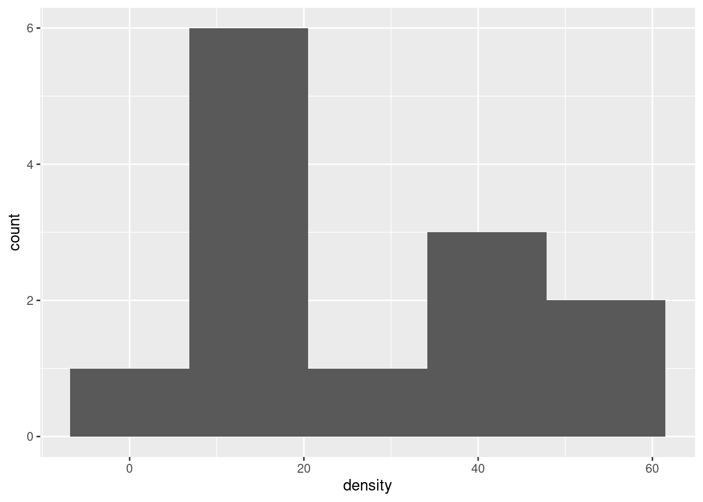
Your conclusion might depend on how many bins you chose for your histogram. Here’s 8 bins (which is really too many with only 13 observations, but it actually shows the shape well):
ggplot(societies,aes(x=density))+geom_histogram(bins=8)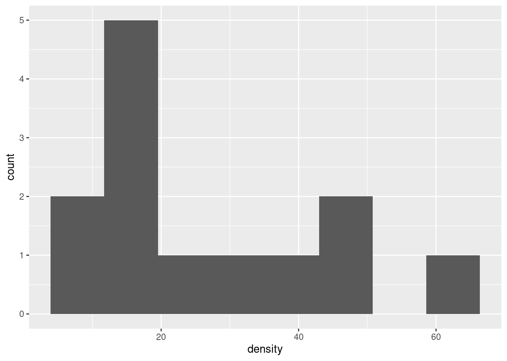
or you can get a number of bins from one of the built-in functions, such as:
mybins=nclass.FD(societies$density)
mybins[1] 3This one is small. The interquartile range is large and \(n\) is small, so the binwidth will be large and therefore the number of bins will be small.
Other choices: a one-group boxplot:
ggplot(societies,aes(x=1,y=density))+geom_boxplot()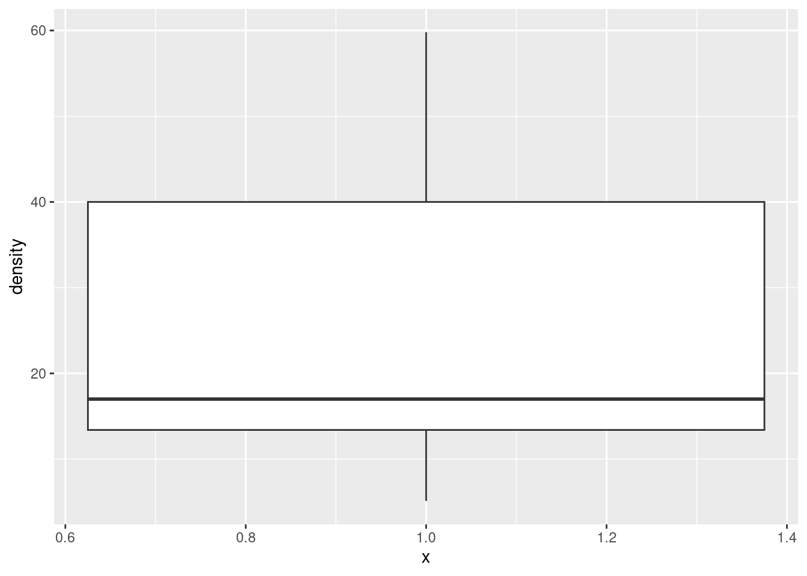
This isn’t the best for assessing normality as such, but it will tell you about lack of symmetry and outliers, which are the most important threats to the \(t\)-test, so it’s fine here. Or, a normal quantile plot:
ggplot(societies,aes(sample=density))+
stat_qq()+stat_qq_line()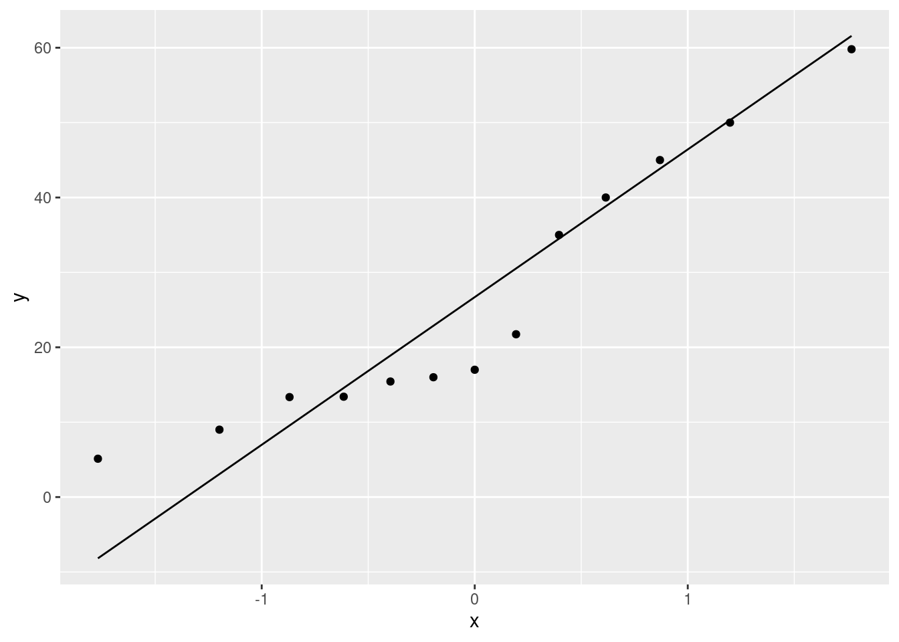
This is actually the best way to assess normality, but I’m not expecting you to use this plot here, because we may not have gotten to it in class yet. (If you have read ahead and successfully use the plot, it’s fine.)
After you have drawn your chosen plot (you need one plot), you need to say something about normality and thus whether you have any doubts about the validity of your \(t\)-test. This will depend on the graph you drew: if you think your graph is symmetric and outlier-free, you should have no doubts about your \(t\)-test; if you think it has something wrong with it, you should say what it is and express your doubts. My guess is that you will think this distribution is skewed to the right. Most of my plots are saying that.2
On the website where I got these data, they were using the data as an example for another test, precisely because they thought the distribution was right-skewed. Later on, we’ll learn about the sign test for the median, which I think is actually a better test here.
\(\blacksquare\)
6.8 Buses to Boulder
A bus line operates a route from Denver to Boulder (these places are in Colorado). The schedule says that the journey time should be 60 minutes. 11 randomly chosen journey times were recorded, and these are in the file link, with journey times shown in minutes.
- Read the data into R, and display the data frame that you read in.
Solution
Since you can read the data directly from the URL, do that (if you are online) rather than having to copy and paste and save, and then find the file you saved. Also, there is only one column, so you can pretend that there were multiple columns, separated by whatever you like. It’s least typing to pretend that they were separated by commas like a .csv file:
my_url <- "http://ritsokiguess.site/datafiles/buses.txt"
journey.times <- read_csv(my_url)Rows: 11 Columns: 1
── Column specification ────────────────────────────────────────────────────────
Delimiter: ","
dbl (1): minutes
ℹ Use `spec()` to retrieve the full column specification for this data.
ℹ Specify the column types or set `show_col_types = FALSE` to quiet this message.journey.timesUsing read_delim with any delimiter (such as " ") will also work, and is thus also good.
Variable names in R can have a dot (or an underscore, but not a space) in them. I have grown accustomed to using dots to separate words. This works in R but not other languages, but is seen by some as old-fashioned, with underscores being the modern way.3 You can also use what is called “camel case” by starting each “word” after the first with an uppercase letter like this:
journeyTimes <- read_csv(my_url)You have to get the capitalization and punctuation right when you use your variables, no matter what they’re called. In any of the cases above, there is no variable called journeytimes. As Jenny Bryan (in link) puts it, boldface in original: Implicit contract with the computer / scripting language: Computer will do tedious computation for you. In return, you will be completely precise in your instructions. Typos matter. Case matters. Get better at typing.
\(\blacksquare\)
- Run a suitable test to see whether there is evidence that the mean journey time differs from 60 minutes. What do you conclude? (I want a conclusion that says something about journey times of buses.)
Solution
t.test doesn’t take a data= to say which data frame to use. Wrap it in a with:
with(journey.times, t.test(minutes, mu = 60))
One Sample t-test
data: minutes
t = 1.382, df = 10, p-value = 0.1971
alternative hypothesis: true mean is not equal to 60
95 percent confidence interval:
57.71775 69.73680
sample estimates:
mean of x
63.72727 We are testing that the mean journey time is 60 minutes, against the two-sided alternative (default) that the mean is not equal to 60 minutes. The P-value, 0.1971, is a lot bigger than the usual \(\alpha\) of 0.05, so we cannot reject the null hypothesis. That is, there is no evidence that the mean journey time differs from 60 minutes.
As you remember, we have not proved that the mean journey time is 60 minutes, which is what “accepting the null hypothesis” would be. We have only failed to reject it, in a shoulder-shrugging kind of way: “the mean journey time could be 60 minutes”. The other acceptable word is “retain”; when you say “we retain the null hypothesis”, you imply something like “we act as if the mean is 60 minutes, at least until we find something better.”
\(\blacksquare\)
- Give a 95% confidence interval for the mean journey time. (No R code is needed here.)
Solution
Just read it off from the output: 57.72 to 69.74 minutes.
\(\blacksquare\)
- Do you draw consistent conclusions from your test and confidence interval? Explain briefly.
Solution
The test said that we should not reject a mean of 60 minutes. The confidence interval says that 60 minutes is inside the interval of plausible values for the population mean, which is another way of saying the same thing. (If we had rejected 60 as a mean, 60 would have been outside the confidence interval.)
\(\blacksquare\)
- Draw a boxplot of the journey times. Do you see a reason to doubt the test that you did above?
Solution
The grouping variable is a “nothing” as in the Ken and Thomas question (part (d)):
ggplot(journey.times, aes(x = 1, y = minutes)) + geom_boxplot()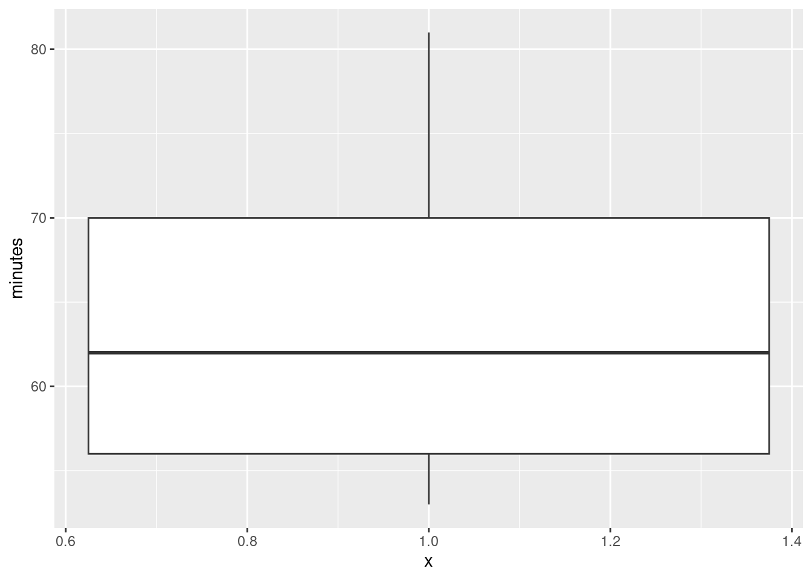
The assumption behind the \(t\)-test is that the population from which the data come has a normal distribution: ie. symmetric with no outliers. A small sample (here we have 11 values) even from a normal distribution might look quite non-normal (as in Assignment 0 from last week), so I am not hugely concerned by this boxplot. However, it’s perfectly all right to say that this distribution is skewed, and therefore we should doubt the \(t\)-test, because the upper whisker is longer than the lower one. In fact, the topmost value is very nearly an outlier:4
ggplot(journey.times, aes(x = minutes)) + geom_histogram(bins = 5)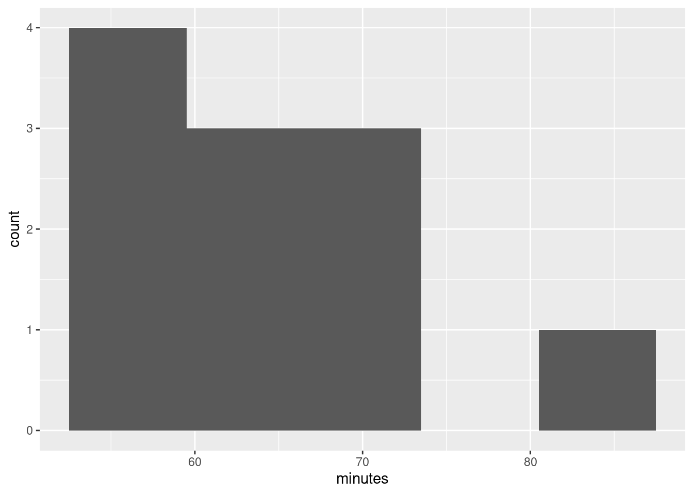
and there might be skewness as well, so maybe I should have been concerned.
I would be looking for some intelligent comment on the boxplot: what it looks like vs. what it ought to look like. I don’t so much mind what that comment is, as long as it’s intelligent enough.
Perhaps I should draw a normal quantile plot:
ggplot(journey.times, aes(sample = minutes)) + stat_qq() + stat_qq_line()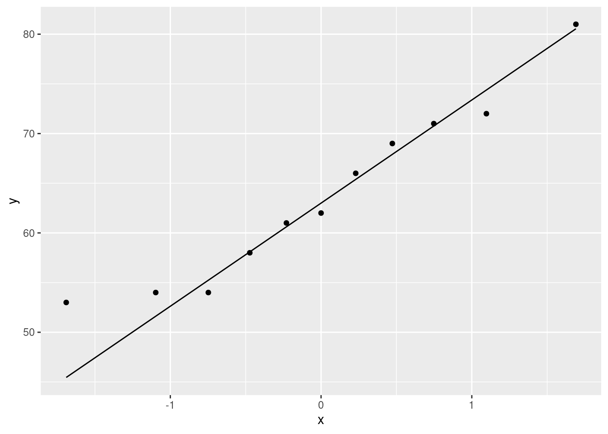
The normal quantile plot is saying that the problem is actually at the bottom of the distribution: the lowest value is not low enough, but the highest value is actually not too high. So this one seems to be on the edge between OK and being right-skewed (too bunched up at the bottom). My take is that with this small sample this is not too bad. But you are free to disagree.
If you don’t like the normality, you’d use a sign test and test that the median is not 60 minutes, which you would (at my guess) utterly fail to reject:
library(smmr)
sign_test(journey.times, minutes, 60)$above_below
below above
4 7
$p_values
alternative p_value
1 lower 0.8867187
2 upper 0.2744141
3 two-sided 0.5488281ci_median(journey.times, minutes)[1] 54.00195 71.99023and so we do. The median could easily be 60 minutes.
\(\blacksquare\)
6.9 Length of gestation in North Carolina
The data in file link are about 500 randomly chosen births of babies in North Carolina. There is a lot of information: not just the weight at birth of the baby, but whether the baby was born prematurely, the ages of the parents, whether the parents are married, how long (in weeks) the pregnancy lasted (this is called the “gestation”) and so on. We have seen these data before.
- Read in the data from the file into R, bearing in mind what type of file it is.
Solution
This is a .csv file (it came from a spreadsheet), so it needs reading in accordingly. Work directly from the URL (rather than downloading the file):
myurl <- "http://ritsokiguess.site/datafiles/ncbirths2.csv"
bw <- read_csv(myurl)Rows: 500 Columns: 10
── Column specification ────────────────────────────────────────────────────────
Delimiter: ","
dbl (10): father_age, mother_age, weeks_gestation, pre_natal_visits, marital...
ℹ Use `spec()` to retrieve the full column specification for this data.
ℹ Specify the column types or set `show_col_types = FALSE` to quiet this message.\(\blacksquare\)
- Find a 95% confidence interval for the mean birth weight of all babies born in North Carolina (of which these babies are a sample). At the end, you should state what the confidence interval is. Giving some output is necessary, but not enough by itself.
Solution
This:
t.test(bw$weight_pounds)
One Sample t-test
data: bw$weight_pounds
t = 104.94, df = 499, p-value < 2.2e-16
alternative hypothesis: true mean is not equal to 0
95 percent confidence interval:
6.936407 7.201093
sample estimates:
mean of x
7.06875 or (the same, but remember to match your brackets):
with(bw, t.test(weight_pounds))
One Sample t-test
data: weight_pounds
t = 104.94, df = 499, p-value < 2.2e-16
alternative hypothesis: true mean is not equal to 0
95 percent confidence interval:
6.936407 7.201093
sample estimates:
mean of x
7.06875 The confidence interval goes from 6.94 to 7.20 pounds.
There is an annoyance about t.test. Sometimes you can use data= with it, and sometimes not. When we do a two-sample \(t\)-test later, there is a “model formula” with a squiggle in it, and there we can use data=, but here not, so you have to use the dollar sign or the with to say which data frame to get things from. The distinction seems to be that if you are using a model formula, you can use data=, and if not, not.
This is one of those things that is a consequence of R’s history. The original t.test was without the model formula and thus without the data=, but the model formula got “retro-fitted” to it later. Since the model formula comes from things like regression, where data= is legit, that had to be retro-fitted as well. Or, at least, that’s my understanding.
\(\blacksquare\)
- Birth weights of babies born in the United States have a mean of 7.3 pounds. Is there any evidence that babies born in North Carolina are less heavy on average? State appropriate hypotheses, do your test, obtain a P-value and state your conclusion, in terms of the original data.
Solution
Let \(\mu\) be the population mean (the mean weight of all babies born in North Carolina). Null hypothesis is \(H_0: \mu=7.3\) pounds, and the alternative is that the mean is less: \(H_a: \mu<7.3\) pounds.
Note that I defined \(\mu\) first before I used it.
This is a one-sided alternative, which we need to feed into t.test:
t.test(bw$weight_pounds, mu = 7.3, alternative = "less")
One Sample t-test
data: bw$weight_pounds
t = -3.4331, df = 499, p-value = 0.0003232
alternative hypothesis: true mean is less than 7.3
95 percent confidence interval:
-Inf 7.179752
sample estimates:
mean of x
7.06875 Or with with. If you see what I mean.
The P-value is 0.0003, which is less than any \(\alpha\) we might have chosen: we reject the null hypothesis in favour of the alternative, and thus we conclude that the mean birth weight of babies in North Carolina is indeed less than 7.3 pounds.
“Reject the null hypothesis” is not a complete answer. You need to say something about what rejecting the null hypothesis means in this case: that is, you must make a statement about birth weights of babies.
\(\blacksquare\)
- The theory behind the \(t\)-test says that the distribution of birth weights should be (approximately) normally distributed. Obtain a histogram of the birth weights. Does it look approximately normal? Comment briefly. (You’ll have to pick a number of bins for your histogram first. I don’t mind very much what you pick, as long as it’s not obviously too many or too few bins.)
Solution
We did this before (and discussed the number of bins before), so I’ll just reproduce my 10-bin histogram (which is what I preferred, but this is a matter of taste):
ggplot(bw, aes(x = weight_pounds)) + geom_histogram(bins = 10)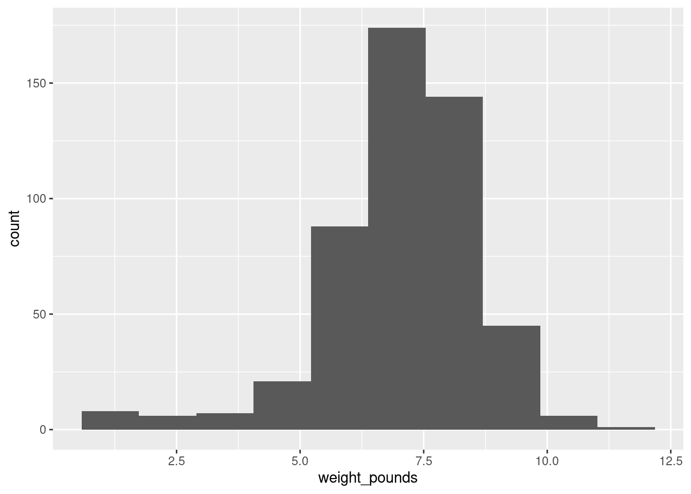
So, we were assessing normality. What about that?
It is mostly normal-looking, but I am suspicious about those very low birth weights, the ones below about 4 pounds. There are too many of those, as I see it.
If you think this is approximately normal, you need to make some comment along the lines of “the shape is approximately symmetric with no outliers”. I think my first answer is better, but this answer is worth something, since it is a not completely unreasonable interpretation of the histogram.
A normal quantile plot is better for assessing normality than a histogram is, but I won’t make you do one until we have seen the idea in class. Here’s the normal quantile plot for these data:
ggplot(bw, aes(sample = weight_pounds)) + stat_qq() + stat_qq_line()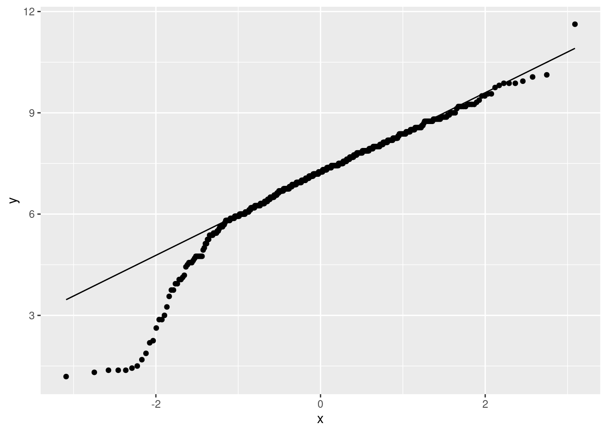
This is rather striking: the lowest birthweights (the ones below 5 pounds or so) are way too low for a normal distribution to apply. The top end is fine (except perhaps for that one very heavy baby), but there are too many low birthweights for a normal distribution to be believable. Note how much clearer this story is than on the histogram.
Having said that, the \(t\)-test, especially with a sample size as big as this (500), behaves very well when the data are somewhat non-normal (because it takes advantage of the Central Limit Theorem: that is, it’s the sampling distribution of the sample mean whose shape matters). So, even though the data are definitely not normal, I wouldn’t be too worried about our test.
This perhaps gives some insight as to why Freedman-Diaconis said we should use so many bins for our histogram. We have a lot of low-end outliers, so that the IQR is actually small compared to the overall spread of the data (as measured, say, by the SD or the range) and so FD thinks we need a lot of bins to describe the shape. Sturges is based on data being approximately normal, so it will tend to produce a small number of bins for data that have outliers.
\(\blacksquare\)
6.10 Inferring ice break-up in Nenana
Nenana, Alaska, is about 50 miles west of Fairbanks. Every spring, there is a contest in Nenana. A wooden tripod is placed on the frozen river, and people try to guess the exact minute when the ice melts enough for the tripod to fall through the ice. The contest started in 1917 as an amusement for railway workers, and has taken place every year since. Now, hundreds of thousands of people enter their guesses on the Internet and the prize for the winner can be as much as $300,000.
Because so much money is at stake, and because the exact same tripod is placed at the exact same spot on the ice every year, the data are consistent and accurate. The data are in link.
Yes, we saw these data before.
- Read the data into R, as before, or use the data frame that you read in before. Note that the values are separated by tabs rather than spaces, so you’ll need an appropriate
read_to read it in.
Solution
These are “tab-separated values”, so read_tsv is the thing, as for the Australian athletes:
myurl <- "http://ritsokiguess.site/datafiles/nenana.txt"
nenana <- read_tsv(myurl)Rows: 87 Columns: 3
── Column specification ────────────────────────────────────────────────────────
Delimiter: "\t"
chr (1): Date&Time
dbl (2): Year, JulianDate
ℹ Use `spec()` to retrieve the full column specification for this data.
ℹ Specify the column types or set `show_col_types = FALSE` to quiet this message.Use whatever name you like for the data frame. One that is different from any of the column headers is smart; then it is clear whether you mean the whole data frame or one of its columns. ice or melt or anything like that would also be good.
\(\blacksquare\)
- Obtain a 90% confidence interval for the mean
JulianDate. What interval do you get? Looking back at your histogram, do you have any doubts about the validity of what you have just done?
Solution
This is a matter of using t.test and pulling out the interval. Since we are looking for a non-standard interval, we have to remember conf.level as the way to get the confidence level that we want. I’m going with with this time, though the dollar-sign thing is equally as good:
with(nenana, t.test(JulianDate, conf.level = 0.90))
One Sample t-test
data: JulianDate
t = 197.41, df = 86, p-value < 2.2e-16
alternative hypothesis: true mean is not equal to 0
90 percent confidence interval:
124.4869 126.6018
sample estimates:
mean of x
125.5443 Between 124.5 and 126.6 days into the year. Converting that into something we can understand (because I want to), there are \(31+28+31+30=120\) days in January through April (in a non-leap year), so this says that the mean breakup date is between about May 4 and May 6.
The \(t\)-test is based on an assumption of data coming from a normal distribution. The histogram we made earlier looks pretty much normal, so there are no doubts about normality and thus no doubts about the validity of what we have done, on the evidence we have seen so far. (I have some doubts on different grounds, based on another of the plots we did earlier, which I’ll explain later, but all I’m expecting you to do is to look at the histogram and say “Yep, that’s normal enough”. Bear in mind that the sample size is 87, which is large enough for the Central Limit Theorem to be pretty helpful, so that we don’t need the data to be more than “approximately normal” for the sampling distribution of the sample mean to be very close to \(t\) with the right df.)
\(\blacksquare\)
- An old-timer in Nenana strokes his grey beard and says “When I were young, I remember the tripod used to fall into the water around May 10”. In a non-leap year, May 10 is Julian day 130. Test the null hypothesis that the mean
JulianDayis 130, against the alternative that it is less. What do you conclude? What practical implication does that have (assuming that the old-timer has a good memory)?
Solution
The test is t.test again, but this time we have to specify a null mean and a direction of alternative:
with(nenana, t.test(JulianDate, mu = 130, alternative = "less"))
One Sample t-test
data: JulianDate
t = -7.0063, df = 86, p-value = 2.575e-10
alternative hypothesis: true mean is less than 130
95 percent confidence interval:
-Inf 126.6018
sample estimates:
mean of x
125.5443 For a test, look first at the P-value, which is 0.0000000002575: that is to say, the P-value is very small, definitely smaller than 0.05 (or any other \(\alpha\) you might have chosen). So we reject the null hypothesis, and conclude that the mean JulianDate is actually less than 130.
Now, this is the date on which the ice breaks up on average, and we have concluded that it is earlier than it used to be, since we are assuming the old-timer’s memory is correct.
This is evidence in favour of global warming; a small piece of evidence, to be sure, but the ice is melting earlier than it used to all over the Arctic, so it’s not just in Nenana that it is happening. You don’t need to get to the “global warming” part, but I do want you to observe that the ice is breaking up earlier than it used to.
\(\blacksquare\)
- Plot
JulianDateagainstYearon a scatterplot. What recent trends, if any, do you see? Comment briefly. (You did this before, but I have some extra comments on the graph this time, so feel free to just read this part.)
Solution
I liked the ggplot with a smooth trend on it:
ggplot(nenana, aes(x = Year, y = JulianDate)) + geom_point() + geom_smooth()`geom_smooth()` using method = 'loess' and formula = 'y ~ x'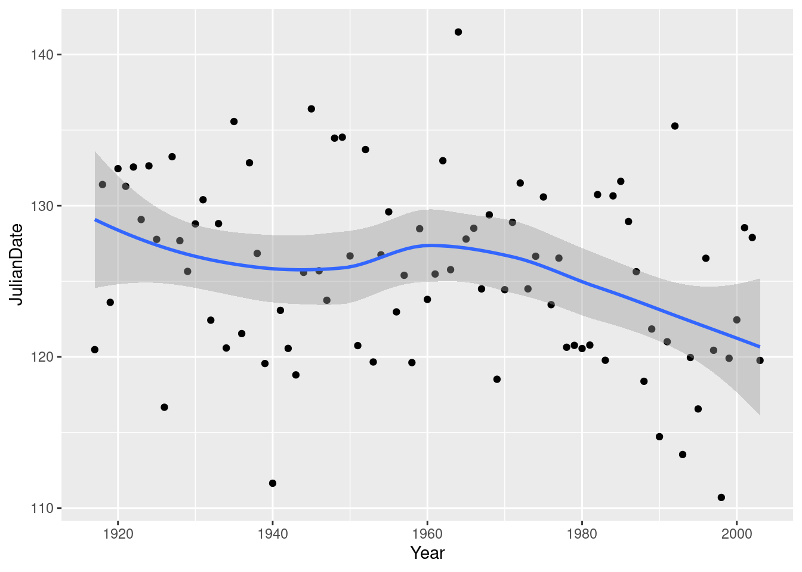
There was something obvious to see: after about 1960, there is a clear downward trend: the ice is breaking up earlier on average every year. Even though there is a lot of variability, the overall trend, viewed this way, is clear (and consistent with the test we did earlier). Note that the old-timer’s value of 130 is the kind of JulianDate we would typically observe around 1920, which would make the old-timer over 90 years old.
All right, why did I say I had some doubts earlier? Well, because of this downward trend, the mean is not actually the same all the way through, so it doesn’t make all that much sense to estimate it, which is what we were doing earlier by doing a confidence interval or a hypothesis test. What would actually make more sense is to estimate the mean JulianDate for a particular year. This could be done by a regression: predict JulianDate from Year, and then get a “confidence interval for the mean response” (as you would have seen in B27 or will see in C67). The trend isn’t really linear, but is not that far off. I can modify the previous picture to give you an idea. Putting in method="lm" fits a line; as we see later, lm does regressions in R:
ggplot(nenana, aes(x = Year, y = JulianDate)) + geom_point() +
geom_smooth(method = "lm")`geom_smooth()` using formula = 'y ~ x'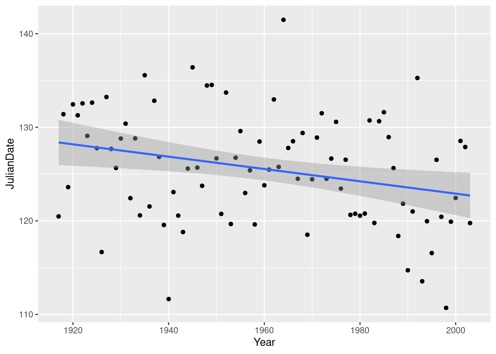
Compare the confidence interval for the mean JulianDate in 1920: 126 to 131 (the shaded area on the graph), with 2000: 121 to 125. A change of about 5 days over 80 years. And with the recent trend that we saw above, it’s probably changing faster than that now. Sobering indeed.
\(\blacksquare\)
6.11 Diameters of trees
The Wade Tract in Thomas County, Georgia, is an old-growth forest of longleaf pine trees. It has survived in a relatively undisturbed state since before settlements of the area by Europeans. For each tree in the tract, researchers measured the diameter at breast height. This is a standard measure in forestry: it is defined as the diameter of the tree at 4.5 feet above the ground.5 They are interested in the mean diameter at breast height of the trees in this tract. These values are in http://ritsokiguess.site/datafiles/treediameter.csv. The diameters are measured in centimetres. The easiest way to get the URL is to right-click on the blue text and select Copy URL. (If you copy and paste the actual text you might end up with extra spaces, especially if the printed URL goes over two lines.)
- Read in and display (some of) the data.
Solution
The obvious way is this:
my_url <- "http://ritsokiguess.site/datafiles/treediameter.csv"
trees <- read_csv(my_url)Rows: 40 Columns: 1
── Column specification ────────────────────────────────────────────────────────
Delimiter: ","
dbl (1): diameter
ℹ Use `spec()` to retrieve the full column specification for this data.
ℹ Specify the column types or set `show_col_types = FALSE` to quiet this message.treesCall the data frame what you like, though it is better to use a name that tells you what the dataframe contains (rather than something like mydata).
Extra 1: there is only one column, so you can pretend the columns are separated by anything at all. Thus you could use this:
my_url <- "http://ritsokiguess.site/datafiles/treediameter.csv"
trees <- read_delim(my_url, " ")Rows: 40 Columns: 1
── Column specification ────────────────────────────────────────────────────────
Delimiter: " "
dbl (1): diameter
ℹ Use `spec()` to retrieve the full column specification for this data.
ℹ Specify the column types or set `show_col_types = FALSE` to quiet this message.treesor even this:
my_url <- "http://ritsokiguess.site/datafiles/treediameter.csv"
trees <- read_table(my_url)
── Column specification ────────────────────────────────────────────────────────
cols(
diameter = col_double()
)treesExtra 2: you might be wondering how they measure the diameter without doing something like drilling a hole through the tree. They don’t actually measure the diameter at all. What they measure is the circumference of the tree, which is easy enough to do with a tape measure. Longleaf pines are usually near circular, so you get the diameter by taking the circumference and dividing by \(\pi\). This City of Portland website shows you how it’s done.
\(\blacksquare\)
- Make a suitable plot of your dataframe.
Solution
One quantitative variable, so a histogram. Choose a sensible number of bins. There are 40 observations, so a number of bins up to about 10 is good. Sturges’ rule says 6 since \(2^6=64\):
ggplot(trees, aes(x=diameter)) + geom_histogram(bins=6)
Extra 1: comments come later, but you might care to note (if only for yourself) that the distribution is a little skewed to the right, or, perhaps better, has no left tail at all. You might even observe that diameters cannot be less than 0 (they are measurements), and so you might expect a skew away from the limit.
After you’ve looked at the \(t\) procedures for these data, we’ll get back to the shape.
Extra 2: later we look at a more precise tool for assessing normality, the normal quantile plot, which looks like this:
ggplot(trees, aes(sample=diameter)) + stat_qq() + stat_qq_line()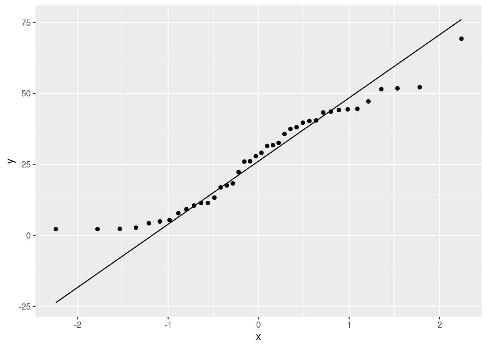
If the data come from a normal distribution, the points should follow the straight line, at least approximately. Here, most of the points do, except for the points on the left, which veer away upwards from the line: that is, the highest values, on the right, are about right for a normal distribution, but the lowest values, on the left, don’t go down low enough.6 Thus, the problem with normality is not the long tail on the right, but the short one on the left. It is hard to get this kind of insight from the histogram, but at the moment, it’s the best we have.
The big problems, for things like \(t\)-tests that depend on means, is stuff like outliers, or long tails, with extreme values that might distort the mean. Having short tails, as the left tail here, will make the distribution look non-normal but won’t cause any problems for the \(t\)-tests.
\(\blacksquare\)
- Obtain a 95% confidence interval for the mean diameter.
Solution
This is t.test, but with conf.level to get the interval (and then you ignore the P-value):
with(trees, t.test(diameter))
One Sample t-test
data: diameter
t = 9.748, df = 39, p-value = 5.245e-12
alternative hypothesis: true mean is not equal to 0
95 percent confidence interval:
21.6274 32.9526
sample estimates:
mean of x
27.29 The mean diameter of a longleaf pine (like the ones in this tract) is between 21.6 and 33.0 centimetres.
If you prefer, do it this way:
t.test(trees$diameter)
One Sample t-test
data: trees$diameter
t = 9.748, df = 39, p-value = 5.245e-12
alternative hypothesis: true mean is not equal to 0
95 percent confidence interval:
21.6274 32.9526
sample estimates:
mean of x
27.29 You need to state the answer and round it off suitably. The actual diameters in the data have one decimal place, so you can give the same accuracy for the CI, or at most two decimals (so 21.63 to 32.95 cm would also be OK).7 Giving an answer with more decimals is something you cannot possibly justify. Worse even than giving too many decimals is not writing out the interval at all. Never make your reader find something in output. If they want it, tell them what it is.
Thus, here (if this were being graded), one mark for the output, one more for saying what the interval is, and the third if you give the interval with a sensible number of decimals.
\(\blacksquare\)
- Based on what you have seen so far, would you expect to reject a null hypothesis that the population mean diameter (of all longleaf pines like these) is 35 cm? Explain briefly. Then, carry out the test (against a two-sided alternative) and explain briefly whether you were right.
Solution
The logic is that “plausible” values for the population mean, ones you believe, are inside the interval, and implausible ones that you don’t believe are outside. Remember that the interval is your best answer to “what is the population mean”, and 35 is outside the interval so you don’t think the population mean is 35, and thus you would reject it.
Are we right? Take out the conf.level and put in a mu:
with(trees, t.test(diameter, mu = 35))
One Sample t-test
data: diameter
t = -2.754, df = 39, p-value = 0.008895
alternative hypothesis: true mean is not equal to 35
95 percent confidence interval:
21.6274 32.9526
sample estimates:
mean of x
27.29 The P-value is less than our \(\alpha\) of 0.05, so we would indeed reject a mean of 35 cm (in favour of the mean being different from 35).
\(\blacksquare\)
- Would you expect 35 cm to be in a 99% confidence interval for the mean diameter? Explain briefly, and then see if you were right.
Solution
The P-value is less than 0.01 (as well as being less than 0.05), so, in the same way that 35 was outside the 95% interval, it should be outside the 99% CI also. Maybe not by much, though, since the P-value is only just less than 0.01:
with(trees, t.test(diameter, conf.level = 0.99))
One Sample t-test
data: diameter
t = 9.748, df = 39, p-value = 5.245e-12
alternative hypothesis: true mean is not equal to 0
99 percent confidence interval:
19.70909 34.87091
sample estimates:
mean of x
27.29 Indeed so, outside, but only just.
\(\blacksquare\)
6.12 One-sample cholesterol
The data set here contains cholesterol measurements for heart attack patients (at several different times) as well as for a group of control patients. We will focus on the control patients in this question.
- Read in and display (some of) the data.
Solution
This is (as you might guess) a .csv, so:
my_url <- "http://ritsokiguess.site/datafiles/cholest.csv"
cholest <- read_csv(my_url)Rows: 30 Columns: 4
── Column specification ────────────────────────────────────────────────────────
Delimiter: ","
dbl (4): 2-Day, 4-Day, 14-Day, control
ℹ Use `spec()` to retrieve the full column specification for this data.
ℹ Specify the column types or set `show_col_types = FALSE` to quiet this message.cholestNote for yourself that there are 30 observations (and some missing ones), and a column called that is the one we’ll be working with.
Extra: the 2-day, 4-day and 14-day columns need to be referred to with funny “backticks” around their names, because a column name cannot contain a - or start with a number. This is not a problem here, since we won’t be using those columns, but if we wanted to, this would not work:
cholest %>% summarize(xbar = mean(2-Day))Error in `summarize()`:
ℹ In argument: `xbar = mean(2 - Day)`.
Caused by error in `h()`:
! error in evaluating the argument 'x' in selecting a method for function 'mean': object 'Day' not foundbecause it is looking for a column called Day, which doesn’t exist. The meaning of 2-Day is “take the column called Day and subtract it from 2”. To make this work, we have to supply the backticks ourselves:
cholest %>% summarize(xbar = mean(`2-Day`, na.rm = TRUE))This column also has missing values (at the bottom), so here I’ve asked to remove the missing values8 before working out the mean. Otherwise the mean is, unhelpfully, missing as well.
You might imagine that dealing with column names like this would get annoying. There is a package called janitor that has a function called clean_names to save you the trouble. Install it first, then load it:
library(janitor)and then pipe your dataframe into clean_names and see what happens:
cholest %>% clean_names() -> cholest1
cholest1These are all legit column names; the - has been replaced by an underscore, and each of the first three column names has gained an x on the front so that it no longer starts with a number. This then works:
cholest1 %>% summarize(xbar = mean(x2_day, na.rm = TRUE))\(\blacksquare\)
- Make a suitable plot of the cholesterol levels of the control patients, and comment briefly on the shape of the distribution.
Solution
There is one quantitative variable, so a histogram, as ever:
ggplot(cholest, aes(x=control)) + geom_histogram(bins=6)
Pick a number of bins that shows the shape reasonably well. Too many or too few won’t. (Sturges’ rule says 6, since there are 30 observations and \(2^5=32\).) Seven bins also works, but by the time you get to 8 bins or more, you are starting to lose a clear picture of the shape. Four bins is, likewise, about as low as you can go before getting too crude a picture.
Choosing one of these numbers of bins will make it clear that the distribution is somewhat skewed to the right.
\(\blacksquare\)
- It is recommended that people in good health, such as the Control patients here, keep their cholesterol level below 200. Is there evidence that the mean cholesterol level of the population of people of which the Control patients are a sample is less than 200? Show that you understand the process, and state your conclusion in the context of the data.
Solution
The word “evidence” means to do a hypothesis test and get a P-value. Choose an \(\alpha\) first, such as 0.05.
Testing a mean implies a one-sample \(t\)-test. We are trying to prove that the mean is less than 200, so that’s our alternative: \(H_a: \mu < 200\), and therefore the null is that the mean is equal to 200: \(H_0: \mu = 200\). (You might think it makes more logical sense to have \(H_0: \mu \ge 200\), which is also fine. As long as the null hypothesis has an equals in it in a logical place, you are good.)
with(cholest, t.test(control, mu=200, alternative = "less"))
One Sample t-test
data: control
t = -1.6866, df = 29, p-value = 0.05121
alternative hypothesis: true mean is less than 200
95 percent confidence interval:
-Inf 200.0512
sample estimates:
mean of x
193.1333 This is also good:
t.test(cholest$control, mu=200, alternative = "less")
One Sample t-test
data: cholest$control
t = -1.6866, df = 29, p-value = 0.05121
alternative hypothesis: true mean is less than 200
95 percent confidence interval:
-Inf 200.0512
sample estimates:
mean of x
193.1333 I like the first version better because a lot of what we do later involves giving a data frame, and then working with things in that data frame. This is more like that.
This test is one-sided because we are looking for evidence of less; if the mean is actually more than 200, we don’t care about that. For a one-sided test, R requires you to say which side you are testing.
The P-value is not (quite) less than 0.05, so we cannot quite reject the null. Therefore, there is no evidence that the mean cholesterol level (of the people of which the control group are a sample) is less than 200. Or, this mean is not significantly less than 200. Or, we conclude that this mean is equal to 200. Or, we conclude that this mean could be 200. Any of those.
If you chose a different \(\alpha\), draw the right conclusion for the \(\alpha\) you chose. For example, with \(\alpha=0.10\), we do have evidence that the mean is less than 200. Being consistent is more important than getting the same answer as me.
Writing out all the steps correctly shows that you understand the process. Anything less doesn’t.
\(\blacksquare\)
- What values could the population mean cholesterol level take? You might need to get some more output to determine this.
Solution
This is not quoting the sample mean, giving that as your answer, and then stopping. The sample mean should, we hope, be somewhere the population mean, but it is almost certainly not the same as the population mean, because there is variability due to random sampling. (This is perhaps the most important thing in all of Statistics: recognizing that variability exists and dealing with it.)
With that in mind, the question means to get a range of values that the population mean could be: that is to say, a confidence interval. The one that came out of the previous output is one-sided, to go with the one-sided test, but confidence intervals for us are two-sided, so we have to run the test again, but two-sided, to get it. To do that, take out the “alternative”, thus (you can also take out the null mean, since a confidence interval has no null hypothesis):
with(cholest, t.test(control))
One Sample t-test
data: control
t = 47.436, df = 29, p-value < 2.2e-16
alternative hypothesis: true mean is not equal to 0
95 percent confidence interval:
184.8064 201.4603
sample estimates:
mean of x
193.1333 With 95% confidence, the population mean cholesterol level is between 184.8 and 201.5.
You need to state the interval, and you also need to round off the decimal places to something sensible. This is because in your statistical life, you are providing results to someone else in a manner that they can read and understand. They do not have time to go searching in some output, or to fish through some excessive number of decimal places. If that’s what you give them, they will ask you to rewrite your report, wasting everybody’s time when you could have done it right the first time.
How many decimal places is a good number? Look back at your data. In this case, the cholesterol values are whole numbers (zero decimal places). A confidence interval is talking about a mean. In this case, we have a sample size of 30, which is between 10 and 100, so we can justify one extra decimal place beyond the data, here one decimal altogether, or two at the absolute outside. (Two is more justifiable if the sample size is bigger than 100.) See, for example, this, in particular the piece at the bottom.
\(\blacksquare\)
- Explain briefly why you would be reasonably happy to trust the \(t\) procedures in this question. (There are two points you need to make.)
Solution
The first thing is to look back at the graph you made earlier. This was skewed to the right (“moderately” or “somewhat” or however you described it). This would seem to say that the \(t\) procedures were not very trustworthy, since the population distribution doesn’t look very normal in shape.
However, the second thing is to look at the sample size. We have the central limit theorem, which says (for us) that the larger the sample is, the less the normality matters, when it comes to estimating the mean. Here, the sample size is 30, which, for the central limit theorem, is large enough to overcome moderate non-normality in the data.
My take, which I was trying to guide you towards, is that our non-normality was not too bad, and so our sample size is large enough to trust the \(t\) procedures we used.
Extra 1: What matters is the tradeoff between sample size and the extent of the non-normality. If your data is less normal, you need a larger sample size to overcome it. Even a sample size of 500 might not be enough if your distribution is very skewed, or if you have extreme outliers.
The place \(n=30\) comes from is back from the days when we only ever used printed tables. In most textbooks, if you printed the \(t\)-table on one page in a decent-sized font, you’d get to about 29 df before running out of space. Then they would say “\(\infty\) df” and put the normal-distribution \(z\) numbers in. If the df you needed was bigger than what you had in the table, you used this last line: that is, you called the sample “large”. Try it in your stats textbooks: I bet the df go up to 30, then you get a few more, then the \(z\) numbers.
Extra 2: By now you are probably thinking that this is very subjective, and so it is. What actually matters is the shape of the thing called the sampling distribution of the sample mean. That is to say, what kind of sample means you might get in repeated samples from your population. The problem is that you don’t know what the population looks like.9 But we can fake it up, in a couple of ways: we can play what-if and pretend we know what the population looks like (to get some understanding for “populations like that”), or we can use a technique called the “bootstrap” that will tell us what kind of sample means we might get from the population that our sample came from (this seems like magic and, indeed, is).
The moral of the story is that the central limit theorem is more powerful than you think.
To illustrate my first idea, let’s pretend the population looks like this, with a flat top:
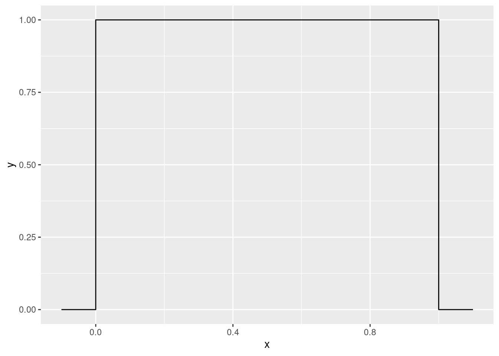
Only values between 0 and 1 are possible, and each of those is equally likely. Not very normal in shape. So let’s take some random samples of size three, not in any sense a large sample, from this “uniform” population, and see what kind of sample means we get. This technique is called simulation: rather than working out the answer by math, we’re letting the computer approximate the answer for us. Here’s one simulated sample:
u <- runif(3)
u[1] 0.9475841 0.1245953 0.2277288mean(u)[1] 0.4333027and here’s the same thing 1000 times, including a histogram of the sample means:
tibble(sim = 1:1000) %>%
rowwise() %>%
mutate(my_sample = list(runif(3))) %>%
mutate(my_mean = mean(my_sample)) %>%
ggplot(aes(x = my_mean)) + geom_histogram(bins = 12)
This is our computer-generated assessment of what the sampling distribution of the sample mean looks like. Isn’t this looking like a normal distribution?
Let’s take a moment to realize what this is saying. If the population looks like the flat-topped uniform distribution, the central limit theorem kicks in for a sample of size three, and thus if your population looks like this, \(t\) procedures will be perfectly good for \(n=3\) or bigger, even though the population isn’t normal.
Thus, when you’re thinking about whether to use a \(t\)-test or something else (that we’ll learn about later), the distribution shape matters, but so does the sample size.
I should say a little about my code. I’m not expecting you to figure out details now (we see the ideas properly in simulating power of tests), but in words, one line at a time:
- generate 1000 (“many”) samples each of 3 observations from a uniform distribution
- for each sample, work out the mean of it
- turn those sample means into a data frame with a column called
value - make a histogram of those.
Now, the central limit theorem doesn’t always work as nicely as this, but maybe a sample size of 30 is large enough to overcome the skewness that we had:
ggplot(cholest, aes(x=control)) + geom_histogram(bins=6)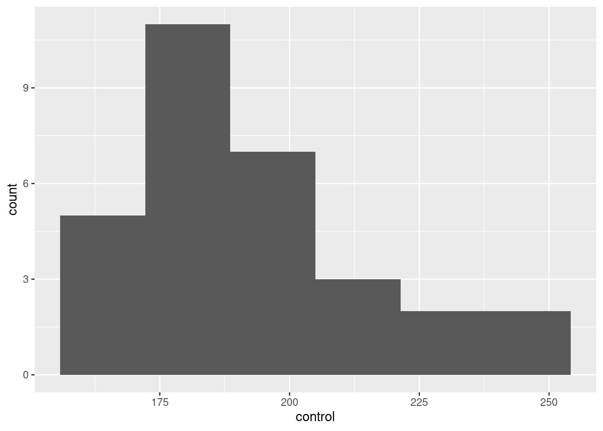
That brings us to my second idea above.
The sample that we had is in some sense an “estimate of the population”. To think about the sampling distribution of the sample mean, we need more estimates of the population. How might we get those? The curious answer is to sample from the sample. This is the idea behind the bootstrap. (This is what Lecture 3c is about.) The name comes from the expression “pulling yourself up by your own bootstraps”, meaning “to begin an enterprise or recover from a setback without any outside help” (from here), something that should be difficult or impossible. How is it possible to understand a sampling distribution with only one sample?
We have to be a bit careful. Taking a sample from the sample would give us the original sample back. So, instead, we sample with replacement, so that each bootstrap sample is different:
sort(cholest$control) [1] 160 162 164 166 170 176 178 178 182 182 182 182 182 184 186 188 196 198 198
[20] 198 200 200 204 206 212 218 230 232 238 242sort(sample(cholest$control, replace=TRUE)) [1] 164 166 166 166 166 176 178 178 182 182 182 182 182 188 198 198 198 200 200
[20] 200 200 204 206 206 218 218 230 232 232 242A bootstrap sample contains repeats of the original data values, and misses some of the others. Here, the original data had values 160 and 162 that are missing in the bootstrap sample; the original data had one value 166, but the bootstrap sample has four! I sorted the data and the bootstrap sample to make this clearer; you will not need to sort. This is a perfectly good bootstrap sample:
sample(cholest$control, replace = TRUE) [1] 242 232 198 160 242 182 182 182 198 162 212 198 242 204 242 242 170 198 182
[20] 206 232 170 218 188 166 178 164 160 218 196So now we know what to do: take lots of bootstrap samples, work out the mean of each, plot the means, and see how normal it looks. The only new idea here is the sampling with replacement:
tibble(sim = 1:1000) %>%
rowwise() %>%
mutate(my_sample = list(sample(cholest$control, replace = TRUE))) %>%
mutate(my_mean = mean(my_sample)) %>%
ggplot(aes(x = my_mean)) + geom_histogram(bins = 12)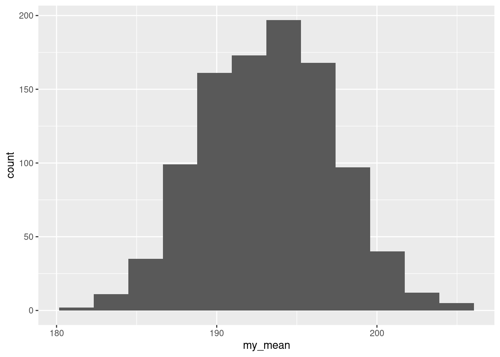
That looks pretty normal, not obviously skewed, and so the \(t\) procedures we used will be reliable enough.
\(\blacksquare\)
The height of a typical human breast off the ground. Men have a breast too, you know.↩︎
The normal quantile plot is rather interesting: it says that the uppermost values are approximately normal, but the smallest eight or so values are too bunched up to be normal. That is, normality fails not because of the long tail on the right, but the bunching on the left. Still right-skewed, though.↩︎
In some languages, a dot is used to concatenate bits of text, or as a way of calling a method on an object. But in R, a dot has no special meaning, and is used in function names like
t.test. Orp.value.↩︎Whether you think it is or not may depend on how many bins you have on your histogram. With 5 bins it looks like an outlier, but with 6 it does not. Try it and see.↩︎
The height of a typical human breast off the ground. Men have a breast too, you know.↩︎
They cannot go down far enough, because they can’t go below zero.↩︎
One more decimal place than the data is the maximum you give in a CI.↩︎
In R, missing values are labelled
NA, andrmis Unix/C shorthand for remove.↩︎If you did, all your problems would be over.↩︎